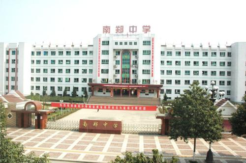

南郑中学，我的中学
南郑中学创建于1949年，1980年被列为市级重点中学，
1996年办成全日制完全高中，2004年12月晋升为省级重点高中。
学校现有66个教学班，在校生5150（2014年）人。在编教工230人，
专任教师182人，其中特级教师2人，高级教师17人，一级教师40人，
专任教师学历合格率为100%，其中研究生学历5人。学校位于南郑县城西大街青年路
，占地面积77200平方米，建筑面积31500平方米，绿化面积3466平方米。校园教学区、
生活区、运动区布局合理，绿化带精心点缀其间，广场绿草如茵，花坛造型别致，环境整洁优美。
